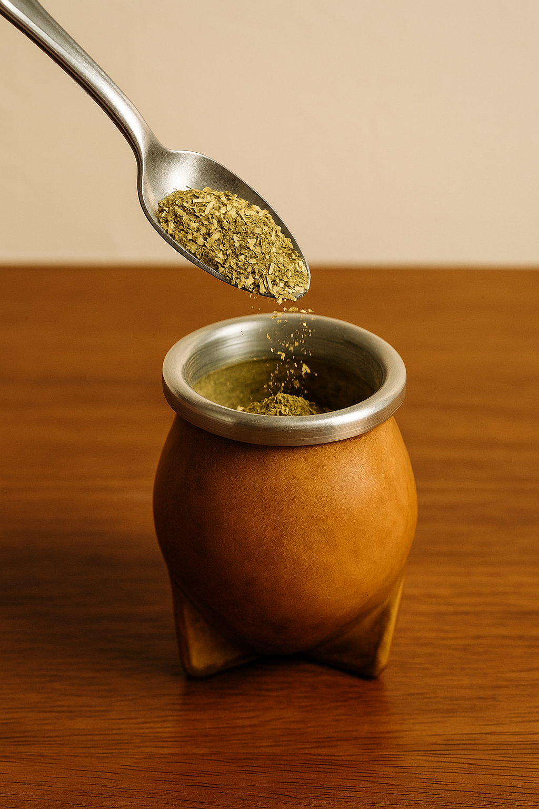
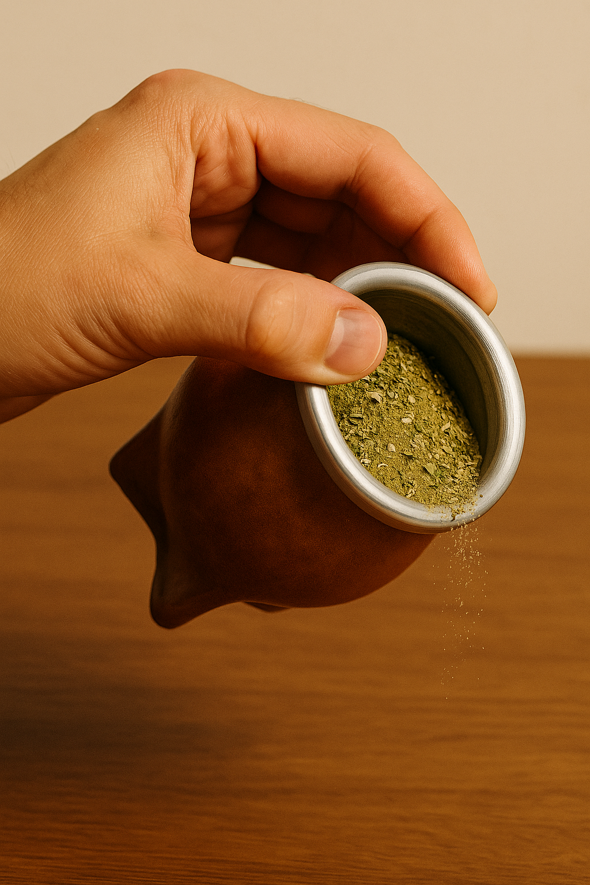
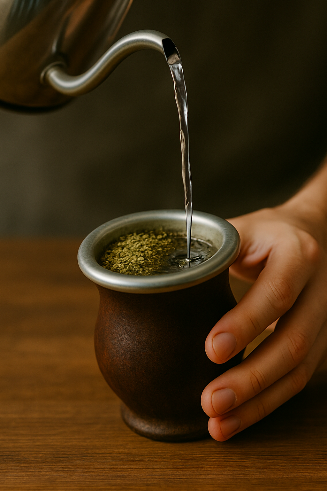
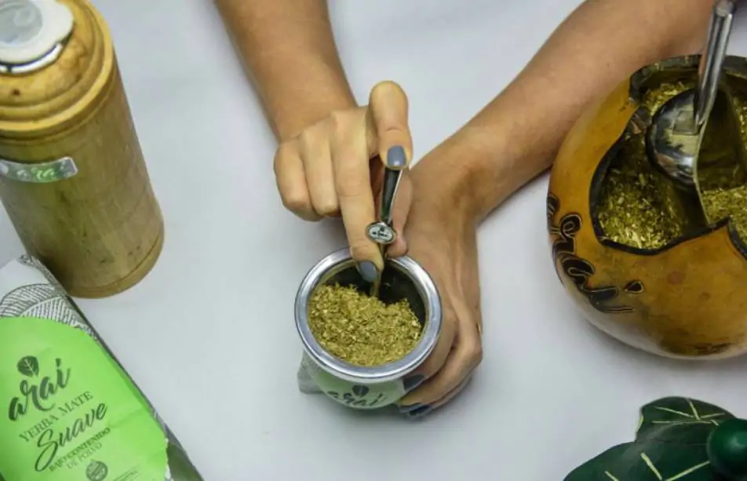
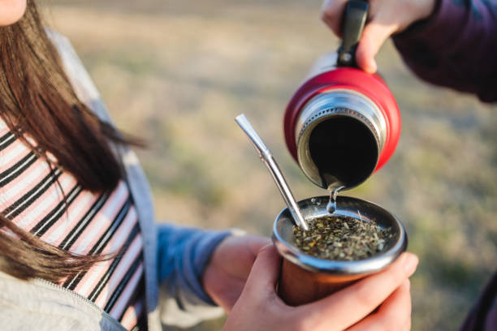
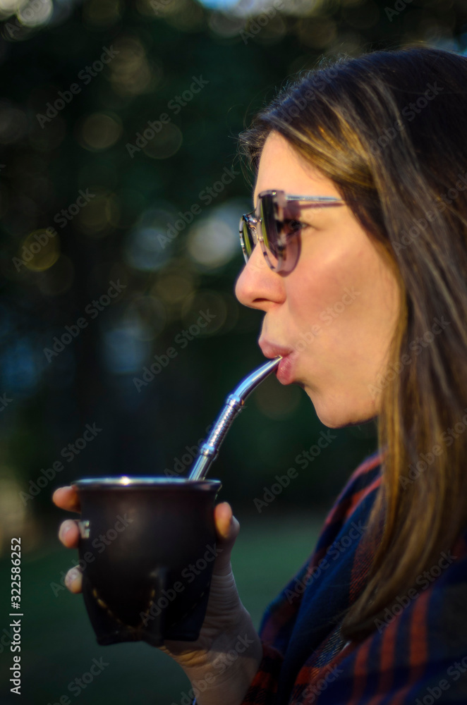

Cómo Preparar un Buen Mate
Preparar un buen mate es mucho más que seguir unos pasos: es un ritual que forma parte de nuestra cultura y que se disfruta con cada cebada. En esta guía te mostramos, de forma sencilla y detallada, cómo armar un mate sabroso para compartir o disfrutar solo, sin complicaciones y respetando las costumbres que lo hacen único.
1-Colocar la yerba en el mate
Empezá llenando el mate con yerba mate seca

- Lo ideal es que llegue hasta las ¾ partes del mate. Esto permite que haya suficiente yerba para varias cebadas, pero también deja espacio para el agua.
- Si te gusta un sabor más suave o estás empezando, podés llenar solo hasta la mitad.
- Este paso determina la duración del mate: más yerba, más rondas de cebado.
2-Tapar la boca del mate y sacudir:
Antes de poner agua, cubrí la boca del mate con la palma de tu mano, invertí el mate boca abajo y sacudilo suavemente unas cuantas veces.

- Esto hace que el polvo más fino suba a la parte superior, mientras que las hojas más grandes quedan abajo.
- Así se evita que el polvo tape la bombilla luego y se logra un mate más parejo.
- También sirve para airear la yerba y que no quede apelmazada.
3-Inclinar la yerba para formar el "montículo:
Volvé a colocar el mate en posición normal, pero inclinalo despacio en un ángulo de unos 45°, de forma que la yerba se acumule hacia un costado.

- Así se crea una especie de pendiente o montañita de yerba, dejando un hueco libre en el lado opuesto.
- Este hueco servirá como “zona de cebado”, es decir, el lugar donde siempre vas a verter el agua.
- Al hacerlo así, la yerba no se moja toda de golpe, extendiendo el sabor durante más cebadas.
4-Verter un poco de agua tibia:
Antes de usar agua caliente, echá un chorrito de agua tibia (alrededor de 40°C) en el hueco que formaste.

- Dejá que la yerba absorba esa agua por unos 30 segundos.
- Esto se llama “despertar la yerba” y hace que el polvo y las hojas se hidraten gradualmente, evitando que se quemen cuando uses el agua caliente.
- Saltarte este paso puede hacer que el mate se vuelva muy amargo desde la primera cebada.
5-Colocar la bombilla:
Cuando la yerba ya absorbió el agua tibia, introducí la bombilla con cuidado en el hueco húmedo, apuntando hacia el fondo.

- Es importante no moverla demasiado, para no desarmar la estructura del montículo de yerba.
- Si la bombilla se mueve mucho después de puesta, puede romper el “canal” que se forma, haciendo que el mate se tape o pierda sabor rápido.
6-Cebar con agua caliente:
Ahora sí, comenzá a cebar el mate con agua caliente.

- La temperatura ideal es entre 70°C y 80°C. Si está hirviendo, va a quemar la yerba y volverla demasiado amarga.
- Verté el agua despacio, siempre en el mismo lugar donde pusiste el agua tibia y donde está la bombilla.
- No mojes toda la yerba de golpe. De esa manera, las zonas secas se irán hidratando de a poco, prolongando el sabor del mate.
7-Tomar y repetir:
Bebé el mate entero hasta que se escuche un “gorgoteo” que indica que ya no queda más agua.

- Después volvés a cebar en el mismo lugar.
- El mate se va “lavando” con cada cebada: al principio será más intenso y con el tiempo perderá fuerza.
- Cuando la yerba ya no tenga sabor, es momento de cambiarla.
8-Disfrutar y compartir:
El mate no es solo una bebida: es un acto social.
- Compartilo con amigos o familia pasando el mate siempre en el mismo orden, y quien ceba se encarga de rellenarlo.
- Si estás solo, igual es un momento para disfrutar tranquilo y acompañar tus tareas o tu descanso.